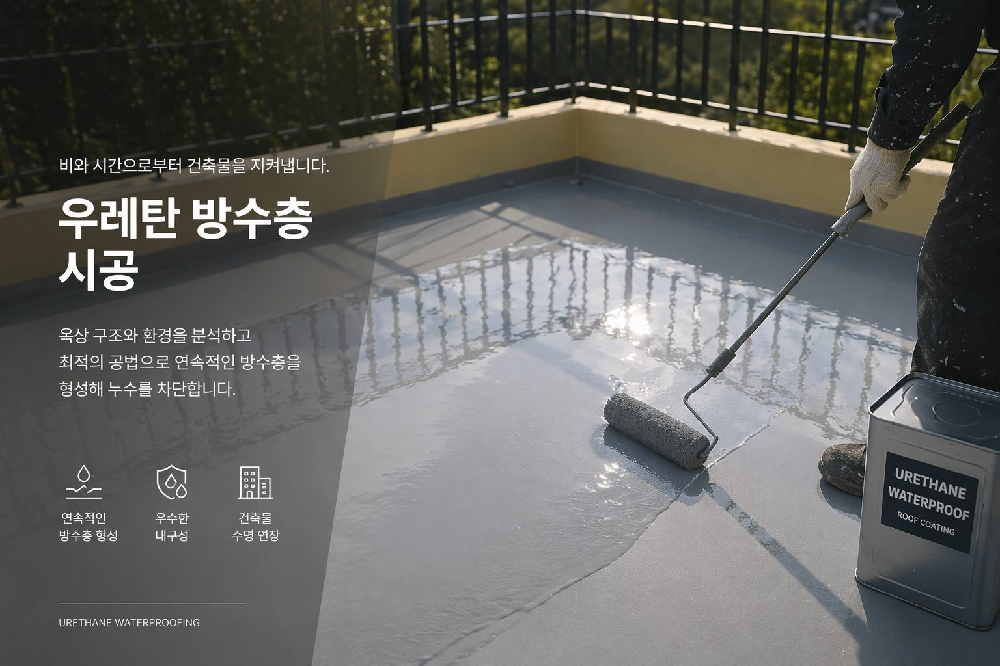

ARCHIVE
액상고무 방수의 적용 범위
이음매 없이 도포되는 액상고무 방수는 형상이 복잡한 부위에 유리합니다. 적합한 바탕면 조건과 한계를 정리했습니다.

이음매가 없다는 장점
드레인 주변, 파이프 관통부, 파라펫 코너처럼 시트 방수가 어려운 부위에서 강점을 가집니다.
바탕면 조건
함수율과 표면 강도가 결과를 좌우합니다. 들뜬 기존 방수층은 제거하고, 취약부는 보강포를 병행합니다.
한계
보행이 잦거나 자외선 노출이 심한 부위는 상부 보호층이 필요합니다. 방수층만으로 마감하지 않습니다.